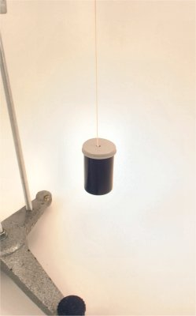
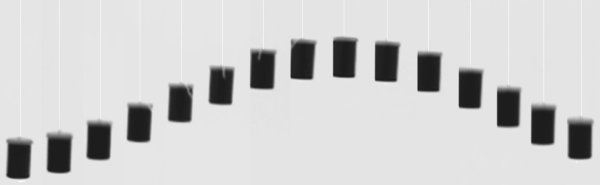
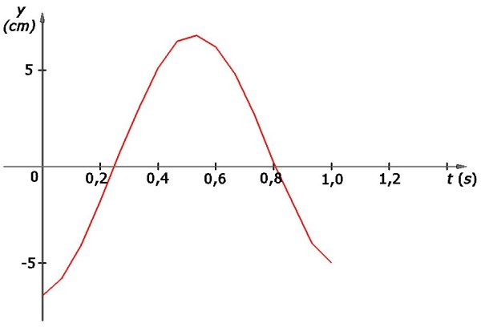

Oscilatorul mecanic
A.2. |
|
Mărimi caracteristice mişcării oscilatorii |
Un cunoscător al unui domeniu este capabil să identifice o mulţime de caracteristici ale unui subiect aparţinând acelui domeniu, recunoscând importanţa
fiecărei caracteristici în parte. Un cunoscător al automobilelor va fi interesat nu doar de preţul acestora, ci şi de tipul, puterea şi turaţia motorului,
consumul specific, tipul de tracţiune, ţinuta de drum, tipul anvelopelor, şi multe altele asemenea. Fiecare dintre aceste caracteristici are importanţa sa
în performanţa globală a unui automobil.
Un cunoscător al mişcărilor oscilatorii va fi de asemenea capabil să identifice o mulţime de caracteristici ale acestor mişcări, recunoscând importanţa
fiecărei caracteristici în parte.
 Activitatea experimentală 1A2−1
Activitatea experimentală 1A2−1
Construieşte un pendul cu fir elastic şi observă mişcarea acestuia.
Pasul 1 Înlocuieşte firul de aţă al pendulului pe care l−ai realizat la activitatea experimentală 1A1−1, cu un fir elastic
subţire, extras dintr−o bandă elastică (cum sunt cele folosite la confecţii). Ai realizat astel un pendul cu fir elastic (figura 1A2−1).

Fig. 1A2−1. Pendul cu fir elastic.
Poziţia sa de echilibru este cu firul elastic alungit vertical. Alungirea firului elastic în poziţia de echilibru depinde de greutatea corpului atârnat
de acesta.
Pasul 2 Trage de corpul pendulului, vertical în jos şi eliberează−l. Observă mişcarea pendulului şi măsoară−i perioada de
oscilaţie.
Perioada unei mişcării oscilatorii este o caracteristică importantă a acesteia. Uneori, suntem interesaţi să realizăm oscilatori având o anumită perioadă
de oscilaţie.
 Provocarea 1A2−1
Provocarea 1A2−1
Încearcă să faci ca oscilaţiile pendulului cu fir elastic pe care l−ai realizat să aibă perioada 0,5 s.
Când oscilaţiile sunt rapide, având perioada o fracţiune dintr−o secundă, preferăm să utilizăm o altă caracteristică: frecvenţa oscilaţiei.
 Numim frecvenţa unei oscilaţii numărul de oscilaţii complete efectuate în fiecare secundă.
Numim frecvenţa unei oscilaţii numărul de oscilaţii complete efectuate în fiecare secundă.
Înjumătăţind perioada de oscilaţie, numărul de oscilaţii efectuate în fiecare secundă se dublează. Aşadar, relaţia dintre frecvenţa şi perioada unei oscilaţii
este de inversă proporţionalitate:
Unitatea de măsură pentru frecvenţă, în Sistemul Internaţional, este s−1, unitate numită hertz (simbol Hz).
Numele unităţii a fost dat în onoarea germanului Heinrich Hertz, cel care a demonstrat experimental, pentru prima dată, existenţa undelor electromagnetice (undele radio).
Vei întâlni acest subiect în capitolul următor al aceste cărţi electronice, sau ori de câte ori asculţi radioul (fiecare post de radio are frecvenţa sa)!
Provocarea 1A2−2
Un calculator personal are un microprocesor care funcţionează la frecvenţa 2200 MHz. Într−un ciclu complet, microprocesorul calculatorului poate
efectua un calcul tipic (o adunare, de exemplu). Cât durează un ciclu complet al acestui microprocesor?
Succesiunea de imagini din figura 1A2−2 reprezintă poziţiile succesive ale unui pendul cu fir elastic, fotografiile fiind realizate cu frecvenţa
15 Hz.

Fig. 1A2−2. Poziţiile succesive ale unui pendul cu fir elastic, fotografiate cu frecvenţa 15 Hz.
Şi tu poţi realiza astfel de fotografii, folosind un aparat fotografic digital care are opţiunea multiburst (fotografii multiple, în succesiune rapidă).
Dacă eşti interesat, accesează acest ghid privind realizarea unor astfel de fotografii.
Pe parcursul unei oscilaţii mecanice, poziţia oscilatorului se modifică de la o clipă la alta, de o parte şi de cealaltă a poziţiei de echilibru.
Numim elongaţie coordonata oscilatorului faţă de poziţia de echilibru.
Fiind coordonata faţă de poziţia de echilibru, elongaţia este pozitivă într−o parte a poziţiei de echilibru şi negativă în cealaltă parte, semnul
fiind dat de alegerea axei de coordonate.
Tabelul 1A2−1 descrie modificarea în timp a elongaţiei în cazul prezentat în figura 1A2−2, axa fiind aleasă vertica în sus, cu originea în dreptul
capacului cutiei, în poziţia de echilibru.
Tabelul 1A2−1. Modificarea în timp a elongaţiei pendulului cu fir elastic.
Numărul
fotografiei |
Timpul
s |
Elongaţia
cm |
| 0 |
0 |
-6,7 |
| 1 |
1/15 |
-5,8 |
| 2 |
2/15 |
-4,1 |
| 3 |
3/15 |
-1,8 |
| 4 |
4/15 |
0,7 |
| 5 |
5/15 |
3,0 |
| 6 |
6/15 |
5,1 |
| 7 |
7/15 |
6,5 |
| 8 |
8/15 |
6,8 |
| 9 |
9/15 |
6,2 |
| 10 |
10/15 |
4,8 |
| 11 |
11/15 |
2,7 |
| 12 |
12/15 |
0,2 |
| 13 |
13/15 |
-1,9 |
| 14 |
14/15 |
-4,0 |
| 15 |
15/15 |
-5,0 |
Pe parcursul oscilaţiilor, oscilatorul ajunge, din când în când, la cea mai mare depărtare de poziţia de echilibru.
Numim amplitudinea unei oscilaţii valoarea absolută a elongaţiei maxime a acelei oscilaţii:
amplitudinea |elongaţiamax|
Amplitudinea unei oscilaţii are aceleaşi unităţi de măsură ca elongaţia acelei oscilaţii (metri, în Sistemul Internaţional).
Provocarea 1A2−3
Cât este amplitudinea oscilaţiei descrisă de tabelul 1A2−1? Dar perioada acesteia?
Este dificil să interpretezi multe date experimentale numerice, cum sunt cele din tabelul 1A2−1. Este mult mai
convenabil să interpretezi reprezentarea grafică a aceloraşi date (figura 1A2−3).

Fig. 1A2−3. Reprezentarea grafică a elongaţiei pendulului cu fir elastic.
Perioada, frecvenţa, elongaţia şi amplitudinea sunt câteva caracteristici importante ale oricărei mişcări oscilatorii. Vei utiliza
aceste caracteristici ori de câte ori vei descrie sau vei analiza o mişcare oscilatorie.